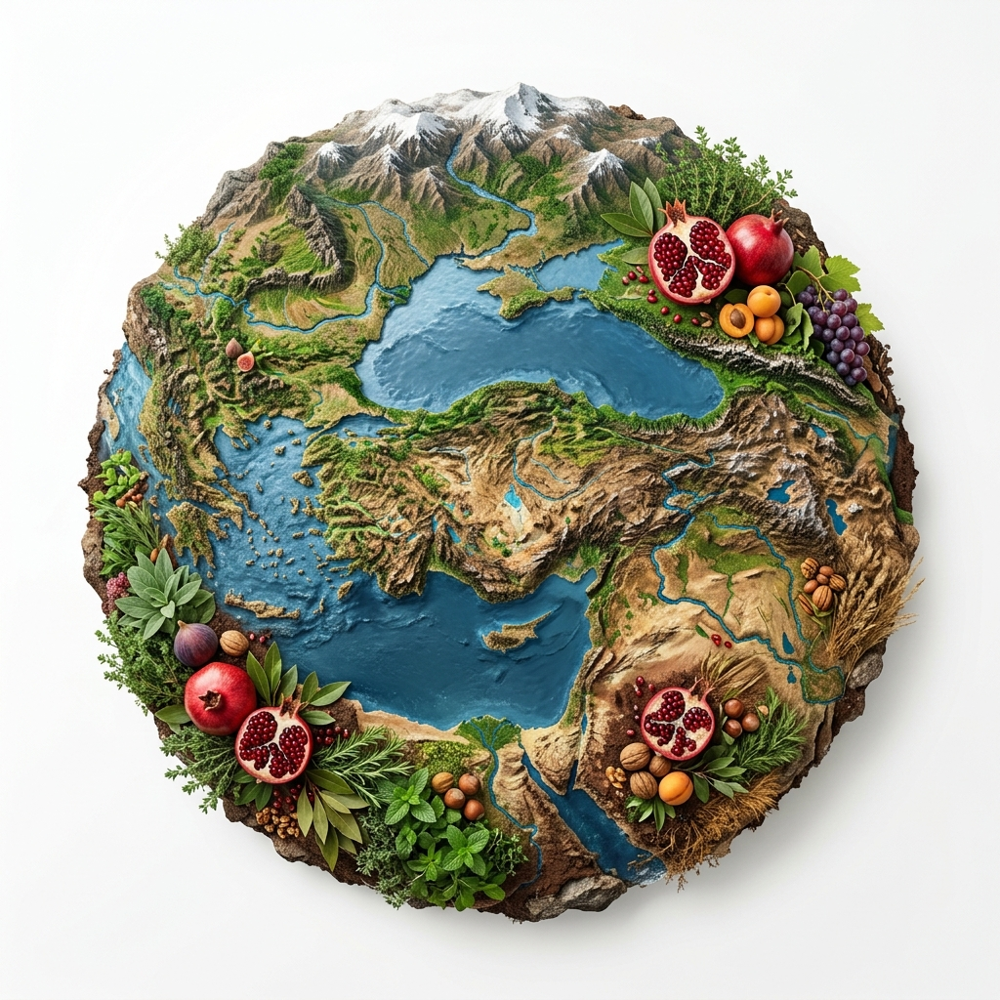
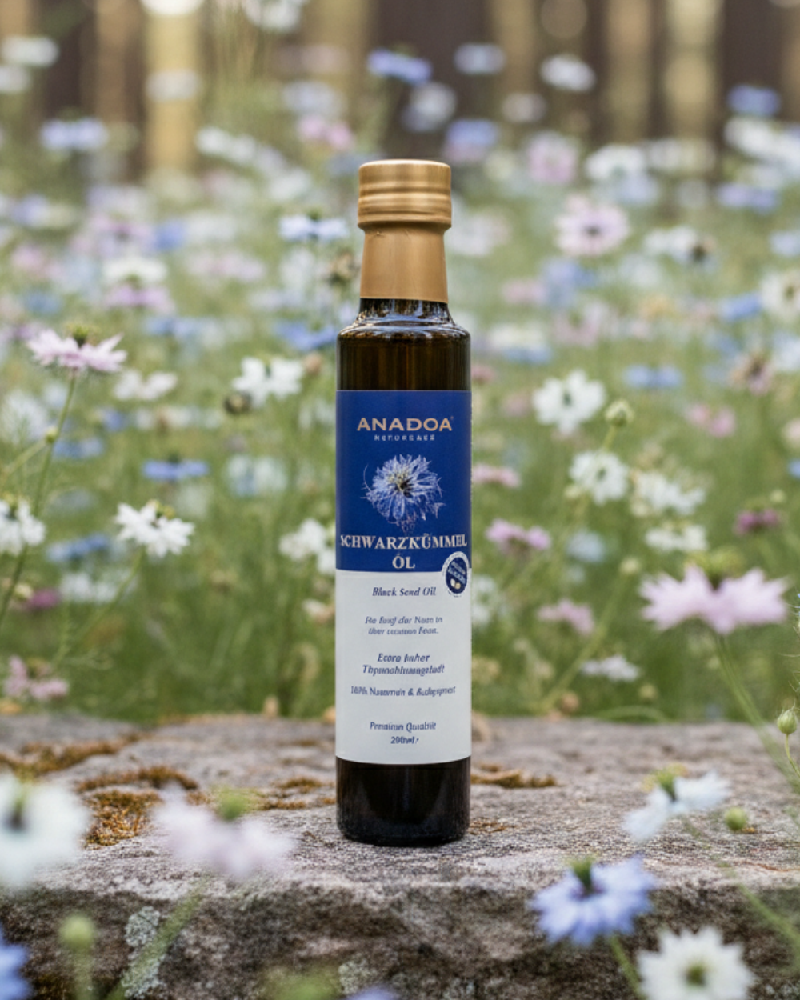
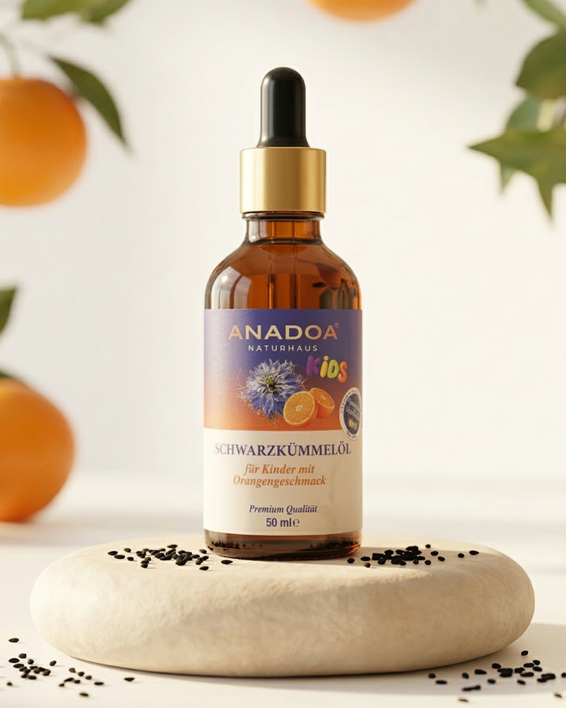

Rein, kaltgepresst, unverfälscht – Anadoa bringt natürliche Heilmittel auf den Tisch, die Menschen und Umwelt achten. Von Kaltgepressten Ölen über Pasten bis zu traditionellen Kräutern: Alles aus Liebe zu Natur, Gesundheit und Tradition.

Echte Erfahrungen von Menschen, die der Kraft der anatolischen Naturheilkunde vertrauen.

Unsere Mission ist es, die jahrtausendealte Tradition der anatolischen Naturheilkunde direkt zu Ihnen zu bringen – rein, unverfälscht und schonend verarbeitet.
Ausgewählte Schwarzkümmelsamen (Nigella Sativa) werden besonders schonend kaltgepresst. So bleiben wertvolle ätherische Öle, Vitamine und Mineralien vollständig erhalten.
Durch unsere Herkunft aus den sonnenverwöhnten Regionen Anatoliens garantieren wir einen außergewöhnlich hohen Thymoquinon-Gehalt für absolute Premium-Qualität.
Die bewährte Kraft des Schwarzkümmelöls – jetzt speziell für die Bedürfnisse von Kindern entwickelt. Sanft in der Wirkung und kindgerecht im Geschmack.
Durch die schonende Zugabe von natürlichem Orangenöl schmeckt es besonders mild und fruchtig. Ideal für Kinder, die den herben Eigengeschmack nicht mögen.
Unterstützen Sie die natürlichen Abwehrkräfte Ihres Kindes auf sanfte Weise. 100% rein, ohne künstliche Zusätze oder versteckten Zucker.

Wahre Schönheit und Gesundheit beginnen in der Natur – entfalten ihre Kraft aber erst vollständig durch Respekt und moderne Forschung.
Inspiriert von „Anadoa“, dem Begriff für Mutter Erde, wurzeln wir in Anatolien. Kein Massenhandel, sondern eine bewusste Auswahl – verantwortungsvoll gefunden und weitergegeben.
Wir glauben nicht an große Versprechen, sondern an überprüfbare Qualität nach deutschen Standards. Reinheit, Herkunft und Transparenz sind für uns keine Marketingbegriffe, sondern Grundvoraussetzung.
Wir verbinden alte anatolische Pflanzenkunde mit modernen, schonenden Herstellungsverfahren. Ob traditionelle Kaltpressungen, naturreine Extrakte oder Fruchtmelassen – für uns stehen Tradition und Innovation im perfekten Dialog.
Entdecken Sie, wie Sie unsere traditionellen Kaltpressungen, Pasten und Fruchtmelassen in köstliche & gesunde Meisterwerke verwandeln können.
Tauche ein in unser Magazin und entdecke die faszinierende Welt der Heilpflanzen, traditionellen Handwerkskunst und natürlichen Lebensweise.

Das Gold der Pharaonen und seine unglaublichen wissenschaftlichen Eigenschaften.
Weiterlesen →
Warum traditionelles Tahin aus der Steinmühle jedem Industrieprodukt überlegen ist.
Weiterlesen →
Wie die Zypressenzapfen Paste seit Jahrhunderten als natürliches Stärkungsmittel dient.
Weiterlesen →Hier finden Sie Antworten auf die am häufigsten gestellten Fragen zu unseren traditionellen Naturheilmitteln und Herstellungsverfahren.
Anadoa Naturhaus setzt auf kompromisslose Reinheit. Wir nutzen ausschließlich traditionelle Kaltpressverfahren und beziehen unsere Rohstoffe aus unberührten anatolischen Hochebenen, fernab von industrieller Landwirtschaft.
Durch die Kaltpressung unter 40 Grad Celsius bleiben alle wertvollen sekundären Pflanzenstoffe, Vitamine und essenziellen Fettsäuren vollständig erhalten. Industrielle Heißpressung zerstört diese empfindlichen Moleküle.
Unsere Zypressenzapfen Paste ist ein traditionelles Hausmittel, das besonders in den kälteren Monaten geschätzt wird. Sie ist ideal für die ganze Familie und unterstützt das allgemeine Wohlbefinden durch ihre reichhaltigen ätherischen Öle.
Gilaburu Saft wird in der anatolischen Tradition kurmäßig angewendet. Wir empfehlen täglich ein kleines Glas (ca. 50-100ml) pur oder mit etwas Wasser verdünnt zu trinken, idealerweise vor einer Mahlzeit.
Ja, ausnahmslos jede Charge wird in unabhängigen deutschen Laboren auf Reinheit, mikrobiologische Unbedenklichkeit und den Gehalt an aktiven Inhaltsstoffen (wie Thymoquinon im Schwarzkümmelöl) strengstens geprüft.
Unsere Rohstoffe stammen aus den unberührten, schadstofffreien Hochebenen Anatoliens. Wir arbeiten direkt mit lokalen Kleinbauern zusammen, die traditionelle Anbaumethoden pflegen und die Natur achten.